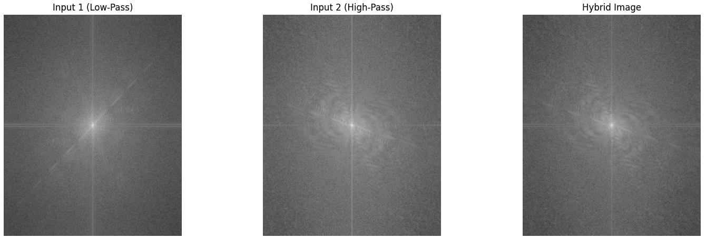
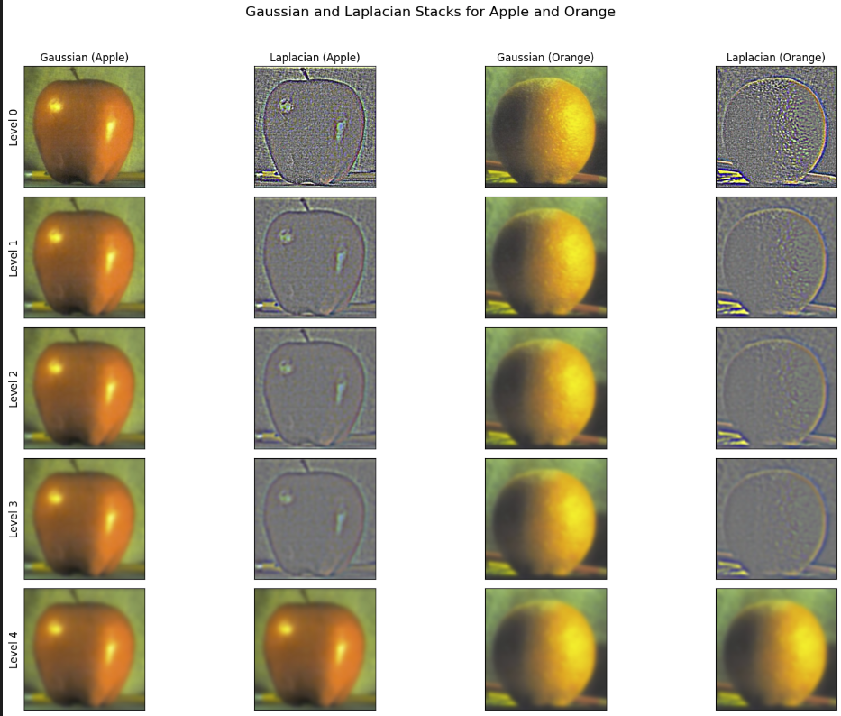

The runtime of the 4 loop convolution is significantly slower (18 seconds) than that of the 2 loop convolution (3 seconds) and Scipy's function (0.07 seconds). The speedup benefits mostly come from vectorization operations, getting rid of the 2 inner loops. For boundary cases, both of my convolution functions use zero-padding, creating a border of zeros around the image. Even for the Scipy function, I chose to use boundary='fill' which also is equivalent to the zero-padding method.
Part 1.2: Finite Difference Operator
Partial derivatives wrt X and Y
Gradient Magnitude and Binarized Edge (adjusted threshold so background buildings are visible)
Part 1.3: DoG Filter
DoG Filters
Gaussian Smoothing and Convolving with DoG filters are the exact same since convolution is associative. DoG is simply more efficient.
The finite difference method reveals a noisy result since the difference operator amplifies every tiny intensity variation (without any Gaussian blurring). However, the trade-off is that smoothing results in edges that are blurrier and thicker which comes at a cost of sharper, more precise edges.
Part 2.1: Image Sharpening
The unsharp mask filter uses both blur filters and high frequencies. In my implementation, the blur filter is a low-pass filter - it smooths images by removing high-frequency information. Using this filter, we subtract this version from the original, giving us an image containing only high-frequency details. Then, to sharpen the image, we can scale up these details by α. The higher α is, the more intense the sharpening effect.
Taj Mahal with its high frequency details isolated and scaled up to result in the sharpened image.
Celebrations from PSG's championship win sharpened to make the flag less blurry and the crowd more enhanced.
Increasing alpha leading to even more sharpness, however, now we overemphasize higher frequency details leading to some cartoonish depictions of the original images.
Part 2.2: Hybrid Images
Hybrid image of Derek and his cat
Hybrid image of a tiger and a rabbit
Hybrid image of Lebron and Jordan

Fourier Transforms of the Lebron/Jordan Hybrid image
Filtered Results of the Lebron/Jordan Hybrid image with cutoff frequencies of σ=5 for the image of Lebron (low pass) and σ=13 for Jordan (high pass)
Part 2.3/2.4: Gaussian and Laplacian Stacks + Multiresolution Blending
The Oraple

Gaussian and Laplacian Stacks for the Apple and Orange
Recreating figure 3.42 for oraple
The process to created the oraple blended image (visualized through laplacian levels)
Forest and city blended image
The process to created the Forest + city blended image (visualized through laplacian levels)
Patagonia in day and night blended image (using a parabolic mask)
Process to create the blended image with the irregular mask